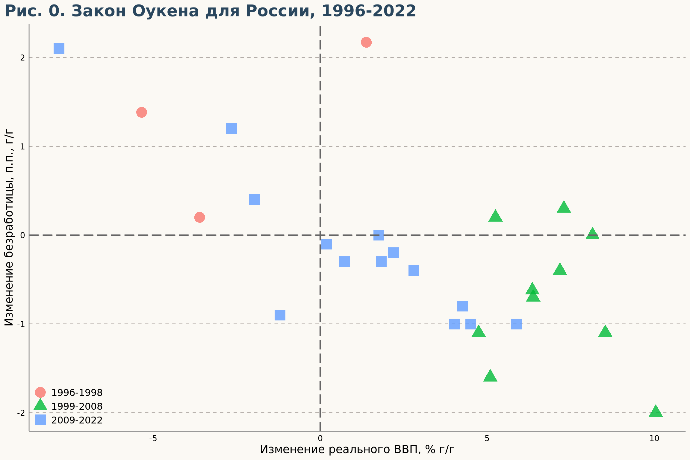
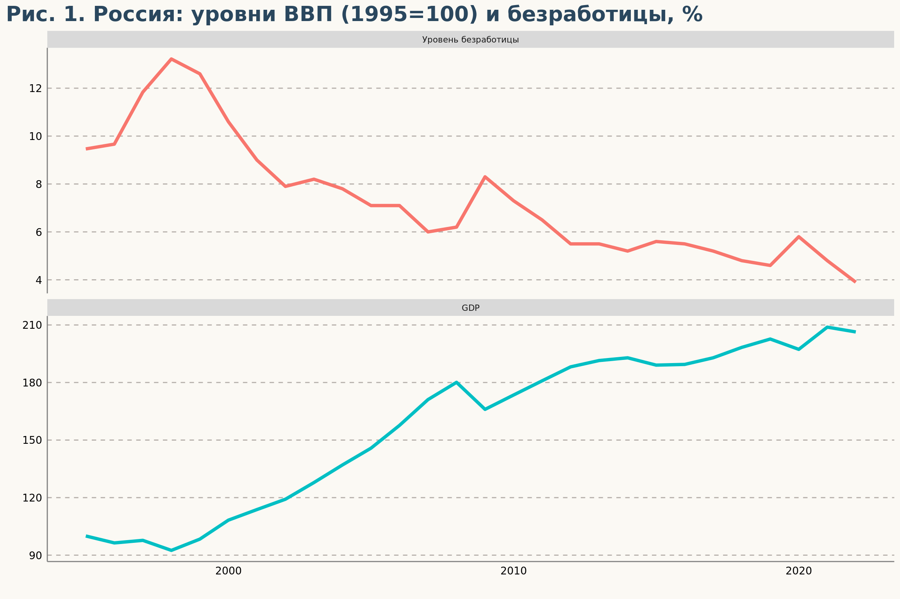
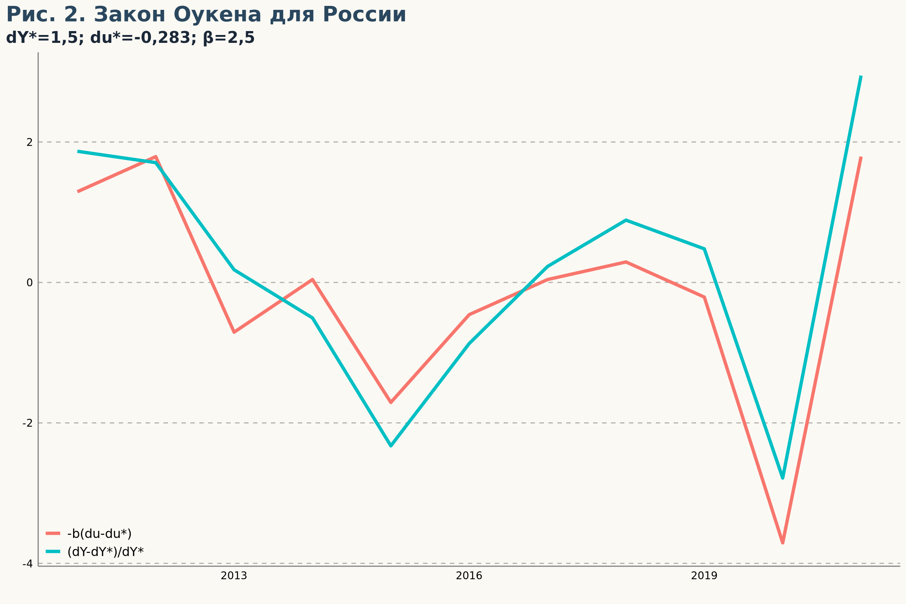
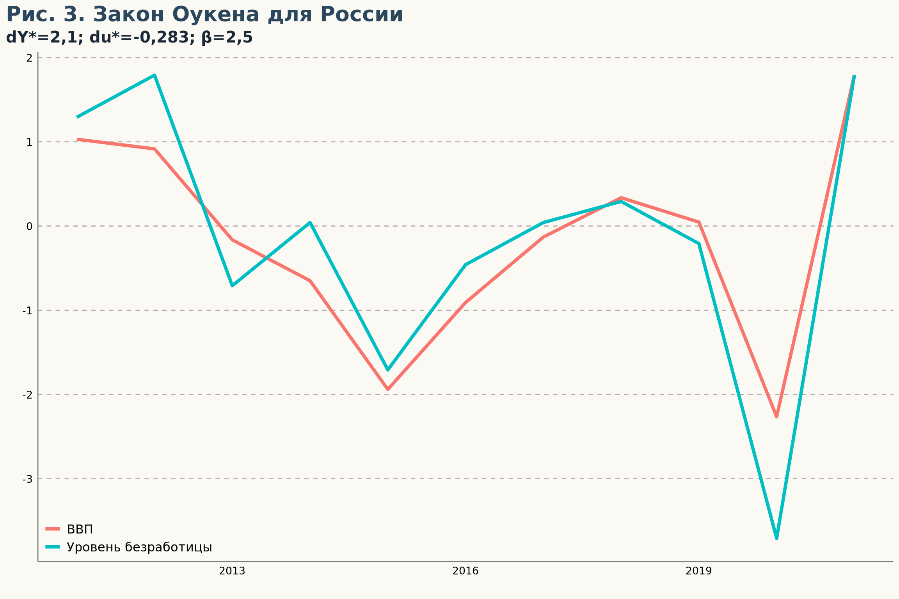
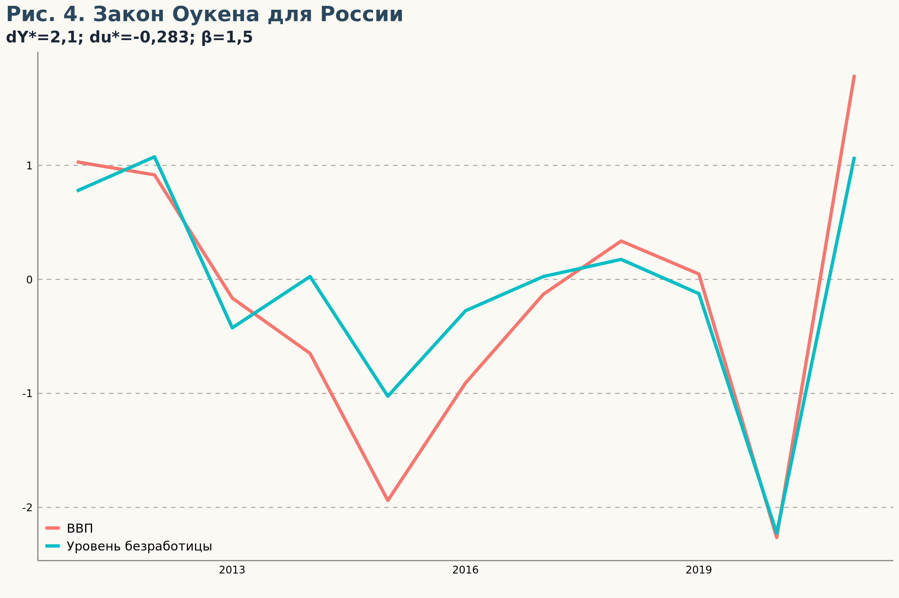
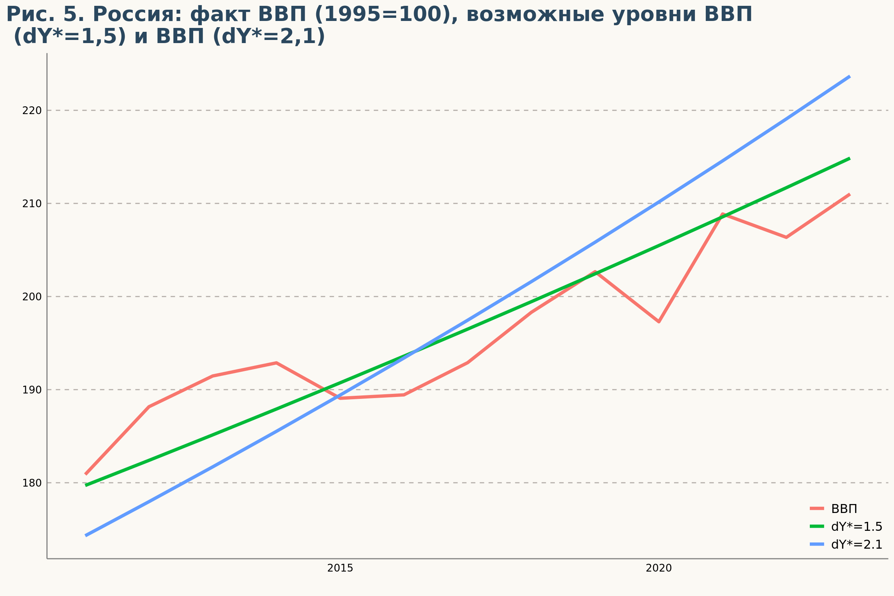
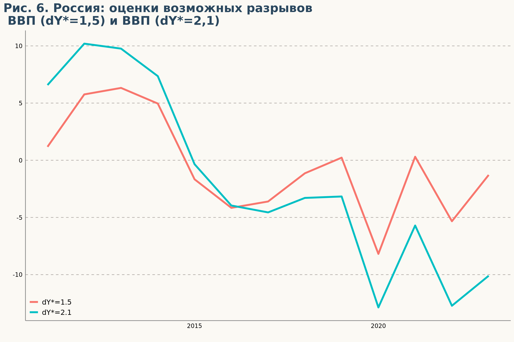

Okun’s law
Закон Оукена для России
Воспроизведение из чата Холодный Расчет, начало тут
Oleg Kryzhanovskiy:
Первые прикидки. Смотрю с 2011 года. В целом, связь явно просматривается (Рис. 1). Так как оба ряда нестационарные, взял первые разности. Соответственно, закон Оукена перевёл тоже к первым разностям. Потенциальные темпы роста сначала взял средние за наблюдаемый период (dY=1,5 и du=-0,283). Построил график (РRис. 2). В принципе, уже неплохо бьётся. Задача, насколько я помню, была оценить dY* из безработицы. Поэтому пытаюсь снизить расхождение (MAE) между двумя кривыми, тюня dY* через Поиск решения (Рис. 3). Получается dY*=2,1. Хотя, честно говоря, MAE не сильно снизилось. Ну и напоследок решил потюнить коэффициент Оукена (Рис. 4.), но это уже техническое упражнение, экономики тут нет. Эксельку с расчётами прилагаю, готов к комментариям. Предварительный вывод: оценки роста потенциального ВВП исходя из закона Оукена несколько выше, чем по среднемноголетнему темпу роста (2,1 vs 1,5).
Код
df %>% filter(year !=1995) %>% ggplot(aes(x=GDP_growth, y= UR_growth)) +
geom_point(aes(color=period, shape= period),
size=6,
alpha = 0.8) +
# geom_smooth(method =lm, se = FALSE) +
geom_vline(
aes(xintercept = 0),
color = "grey40",
linetype = "longdash",
size = .8
)+
geom_hline(
aes(yintercept = 0),
color = "grey40",
linetype = "longdash",
size = .8
) +
labs(title = 'Рис. 0. Закон Оукена для России, 1996-2022',
x = 'Изменение реального ВВП, % г/г',
y = 'Изменение безработицы, п.п., г/г')
Код
df %>%
select(year, GDP_base, UR) %>%
pivot_longer(!year, values_to= 'value') %>%
mutate(name = case_when(
name == 'GDP_base' ~ 'GDP',
.default = 'Уровень безработицы'
)) %>%
ggplot(aes(x=year, y=value, group =name, color=name))+ geom_line(linewidth=1.5) +
facet_wrap(~name, dir="v", scales="free_y") +
theme(legend.position="none", legend.title = element_blank()) +
labs(title = 'Рис. 1. Россия: уровни ВВП (1995=100) и безработицы, %', x='', y='')
Код
df %>% filter(year>2010) %>% mutate(dYstar = mean(GDP_growth),
dustar = mean(UR_growth),
'dY-dY*' = GDP_growth - dYstar,
'(dY-dY*)/dY*' = `dY-dY*`/dYstar,
'du-du*' = UR_growth - dustar,
'-b(du-du*)' = -2.5*`du-du*`) %>%
filter(year < 2022) %>%
select(year, '(dY-dY*)/dY*', '-b(du-du*)') %>%
pivot_longer(!year, values_to='value') %>%
ggplot(aes(x=year, y= value, group=name, color=name)) +
geom_line(linewidth=1.5) +
labs(title = 'Рис. 2. Закон Оукена для России',
subtitle = 'dY*=1,5; du*=-0,283; β=2,5',
x = '',
y = '')
Код
df %>% filter(year>=2010) %>% mutate(GDP = (GDP-100-2.1)/2.1,
deltaUR = (UR-lag(UR)-dustar)*-B25) %>%
filter(year >2010, year<2022) %>%
select(year, GDP, deltaUR) %>%
pivot_longer(!year, values_to = 'value') %>%
mutate(name = case_when(
name == 'GDP' ~ 'ВВП',
.default = 'Уровень безработицы') ) %>%
ggplot(aes(x=year, y=value, group = name, color=name)) +
geom_line(linewidth=1.5) +
labs(title = 'Рис. 3. Закон Оукена для России',
subtitle = 'dY*=2,1; du*=-0,283; β=2,5',
x = '',
y = '')
Георгий:
Получается, если по этой оценке, то в периоды низкого роста ВВП оценка отрицательного разрыва при потенциале 1,5 может быть занижена, а в периоды высокого роста, например, в прошлом 2023 году, наоборот, разрыв завышен.
Код
df %>% filter(year>=2010) %>% mutate(GDP = (GDP-100-2.1)/2.1,
deltaUR = (UR-lag(UR)-dustar)*-B15) %>%
filter(year >2010, year<2022) %>%
select(year, GDP, deltaUR) %>%
pivot_longer(!year, values_to = 'value') %>%
mutate(name = case_when(
name == 'GDP' ~ 'ВВП',
.default = 'Уровень безработицы') ) %>%
ggplot(aes(x=year, y=value, group = name, color=name)) +
geom_line(linewidth=1.5) +
labs(title = 'Рис. 4. Закон Оукена для России',
subtitle = 'dY*=2,1; du*=-0,283; β=1,5',
x = '',
y = '')
Oleg Kryzhanovskiy:
Надо смотреть на конкретный год. Мы знаем, что среднее значение за 2011-2021 равно для факта, для потенциального роста 1,5% и потенциального роста 2,1%. Поэтому, скорее всего, в уровнях это будет выглядеть примерно так (для факта 2023 года взята оценка +3,5% г/г) (Рис. 5):
Код
df %>% select(year, GDP) %>%
add_row(year=2023, GDP=df$GDP[df$year==2022]*1.035) %>%
mutate(GDP_base = cumprod(GDP/100)*100) %>%
filter(year >= 2010) %>%
add_column(GDP15 = (173.48650076548+3.56599810736186)*1.015^c(0:13)) %>%
add_column(GDP21 = (173.48650076548-2.76523324988951)*1.021^c(0:13)) %>%
select(year, GDP_base, GDP15, GDP21) %>% filter (year>2010) %>%
pivot_longer(!year, values_to = "value") %>%
mutate(name = case_when(
name == 'GDP_base' ~ 'ВВП',
name == 'GDP15' ~ 'dY*=1.5',
name == 'GDP21' ~ 'dY*=2.1'
) ) %>%
ggplot(aes(x=year, y=value, group=name, color=name)) +
geom_line(linewidth=1.5)+
theme(
legend.position = c(1, 0),
legend.justification = c(1, 0)) +
labs(title = 'Рис. 5. Россия: факт ВВП (1995=100), возможные уровни ВВП\n (dY*=1,5) и ВВП (dY*=2,1)',
x = '',
y = '')
Oleg Kryzhanovskiy:
Из этого уже смотрим разрывы. Да, потенциальные темпы роста 1,5% мне нравятся больше, они логичнее как-то. (Рис. 6).
Код
df %>% select(year, GDP_base) %>%
add_row(year=2023,
GDP_base=df$GDP_base[df$year==2022]*1.035)%>%
filter(year >= 2010) %>%
add_column(GDP15 = (173.48650076548+3.56599810736186)*1.015^c(0:13)) %>%
add_column(GDP21 = (173.48650076548-2.76523324988951)*1.021^c(0:13)) %>%
mutate(d_GDP15 = GDP_base - GDP15,
d_GDP21 = GDP_base - GDP21) %>%
select(year, d_GDP15, d_GDP21) %>% filter (year>2010) %>%
pivot_longer(!year, values_to = "value") %>%
mutate(name = case_when(
name == 'GDP' ~ 'ВВП',
name == 'd_GDP15' ~ 'dY*=1.5',
name == 'd_GDP21' ~ 'dY*=2.1'
) ) %>%
ggplot(aes(x=year, y=value, group=name, color=name)) +
geom_line(linewidth=1.5) +
labs(title = 'Рис. 6. Россия: оценки возможных разрывов\n ВВП (dY*=1,5) и ВВП (dY*=2,1)',
x = '',
y = '')